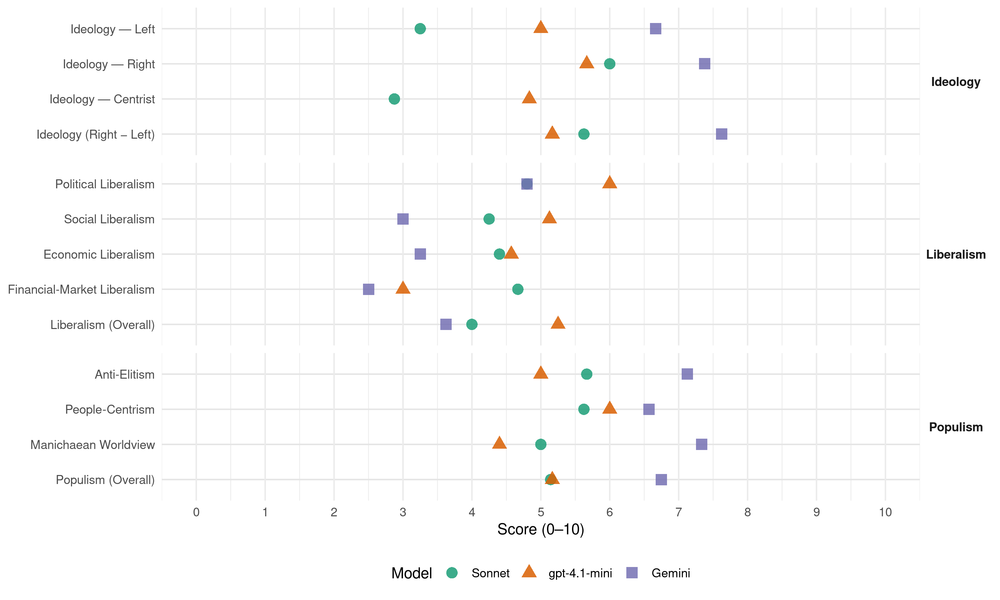

PiS (Poland, 2015)
manifesto_id 92436_201510
Get full text: This site shows derived annotations and short verbatim quotes only. The full manifesto text is © Manifesto Project / WZB — obtain it via manifesto-project.wzb.eu using the manifesto_id above.
Headline scores
| Dimension | Sonnet | gpt-4.1-mini | Gemini |
|---|---|---|---|
| Populism (Overall) | 5.1 | 5.2 | 6.8 |
| Anti-Elitism | 5.7 | 5.0 | 7.1 |
| People-Centrism | 5.6 | 6.0 | 6.6 |
| Manichaean Worldview | 5.0 | 4.4 | 7.3 |
| Ideology (Right − Left) | 5.6 | 5.2 | 7.6 |
| Liberalism (Overall) | 4.0 | 5.2 | 3.6 |
| Political Liberalism | 4.8 | 6.0 | 4.8 |
| Social Liberalism | 4.2 | 5.1 | 3.0 |
| Economic Liberalism | 4.4 | 4.6 | 3.2 |
| Financial-Market Liberalism | 4.7 | 3.0 | 2.5 |
Evidence per dimension
Economic Liberalism
Gemini · score 4.0 · verified · chunk 1
“dążenie do wyprzedaży majątku narodowego”
Drugi – dążenie do wyprzedaży majątku narodowego, która stała się niemal manią
Gemini · score 4.0 · verified · chunk 2
“wolny rynek (silne państwo jest przyjacielem rynku)”
Mocne państwo i związany z nim wolny rynek (silne państwo jest przyjacielem rynku), sprawnie działające
Gemini · score 3.0 · verified · chunk 3
“Finanse publiczne muszą być instrumentem rozwoju”
Rolę Ministerstwa Finansów ograniczymy do strategicznego planowania finansowego… Finanse publiczne muszą być instrumentem rozwoju gospodarczego
Gemini · score 3.0 · verified · chunk 4
“koncepcja nowoczesnego interwencjonizmu państwowego”
Jest to koncepcja nowoczesnego interwencjonizmu państwowego, bez którego nasze państwo może jedynie
Gemini · score 2.0 · verified · chunk 5
“Nie dopuścimy do prywatyzacji Poczty Polskiej”
Zadowalająca rentowność narodowego operatora pocztowego powinna być osiągana nie przez podnoszenie cen usług. Nie dopuścimy do prywatyzacji Poczty Polskiej.
Gemini · score 2.0 · verified · chunk 6
“odrzucamy twierdzenie, że mechanizmy rynkowe”
bezpieczeństwo zdrowotne należy traktować jak cywilizacyjną zdobycz współczesnego świata. Odrzucamy twierdzenie, że mechanizmy rynkowe mogą być podstawą funkcjonowania
Gemini · score 2.0 · verified · chunk 7
“Cofniemy przepisy umożliwiające przekazywanie szkół”
Cofniemy przepisy umożliwiające przekazywanie szkół przez jednostki samorządu terytorialnego osobom fizycznym i prywatnym osobom prawnym, np. fundacjom.
Gemini · score 6.0 · verified · chunk 8
“wspólny rynek, swoboda przepływu”
najważniejszymi zdobyczami Unii są: wspólny rynek, swoboda przepływu osób, dóbr
gpt-4.1-mini · score 3.0 · verified · chunk 1
“odrzucamy etatyzm, tj. dążenie do upaństwowienia szerokiej sfery życia społecznego”
Właśnie dlatego zdecydowanie odrzucając etatyzm, tj. dążenie do upaństwowienia szerokiej sfery życia społecznego, odrzucamy niezdolność państwa do podejmowania działań koniecznych dla obrony interesów wspólnoty, dobra obywateli, wreszcie dla obrony samego siebie.
gpt-4.1-mini · score 4.0 · verified · chunk 2
“marnuje te środki”
…PO marnuje te środki. Jedną z przyczyn jest głęboko osadzona kulturowa niezdolność do sprawnego rządzenia, symetryczna do zdolności łamania wszelkich norm kulturowych, a drugą przyczyną – korupcja.
gpt-4.1-mini · score 3.0 · verified · chunk 3
“finanse publiczne muszą być instrumentem rozwoju gospodarczego”
Rolę Ministerstwa Finansów ograniczymy do strategicznego planowania finansowego oraz prowadzenia księgowości budżetowej państwa. Finanse publiczne muszą być instrumentem rozwoju gospodarczego i społecznego, a nie celem samym w sobie.
gpt-4.1-mini · score 5.0 · verified · chunk 4
“przebudowie systemu podatkowego, która pozwoli na zwiększenie dochodów budżetu”
…Zmiana systemu finansowego w państwie będzie oparta na przebudowie systemu podatkowego, która pozwoli na zwiększenie dochodów budżetu państwa, uwolnienie rezerw podatkowych i realizację zasad solidarności i sprawiedliwości społecznej…
gpt-4.1-mini · score 5.0 · verified · chunk 5
“Wprowadzimy jasne i zachęcające ulgi podatkowe dla przedsiębiorstw realizujących działalność B&R”
Wprowadzimy jasne i zachęcające ulgi podatkowe dla przedsiębiorstw realizujących działalność B&R, jakie istnieją np. w Norwegii, gdzie przedsiębiorstwa zatrudniające powyżej 250 pracowników mogą odpisać 18% sumy wydatków poniesionych na B&R.
gpt-4.1-mini · score 6.0 · verified · chunk 6
“Podniesiony z 7% na 23% VAT na ubranka i obuwie dziecięce zwiększa koszty utrzymania dzieci.”
Zerowa stawka VAT na ubranka dziecięce Polska powinna dążyć do wprowadzenia zerowej stawki podatku od towarów i usług na ubranka dziecięce. Uważamy, że mamy szanse naprawić błąd popełniony w negocjacjach akcesyjnych. Podniesiony z 7% na 23% VAT na ubranka i obuwie dziecięce zwiększa koszty utrzymania dzieci. Jest to zmiana szczególnie niekorzystna dla rodzin polskich rolników, którym wzrostu cen artykułów dla dzieci nie zrekompensuje żadna ulga w podatku dochodowym.
gpt-4.1-mini · score 6.0 · verified · chunk 8
“Dyplomacja ekonomiczna i promocja Polski będzie służyć ekspansji gospodarczej polskiego kapitału”
Dyplomacja ekonomiczna i promocja Polski będzie służyć ekspansji gospodarczej polskiego kapitału i przyciąganiu inwestycji służących rozwojowi przemysłowemu i technologicznemu kraju.
Sonnet · score 5.0 · verified · chunk 1
“zdecydowanie odrzucając etatyzm, tj. dążenie do upaństwowienia”
Właśnie dlatego zdecydowanie odrzucając etatyzm, tj. dążenie do upaństwowienia szerokiej sfery życia społecznego, odrzucamy niezdolność państwa do podejmowania działań koniecznych dla obrony interesów wspólnoty
Sonnet · score 4.0 · verified · chunk 2
“wolny rynek (silne państwo jest przyjacielem rynku)”
Mocne państwo i związany z nim wolny rynek (silne państwo jest przyjacielem rynku), sprawnie działające, zapewniające dostęp do informacji mechanizmy demokratyczne
Sonnet · score 4.0 · verified · chunk 3
“korzystanie z drogich usług sektora prywatnego”
skazują ich na korzystanie z drogich usług sektora prywatnego, wypełniającego lukę powstającą wskutek wycofywania się instytucji publicznych
Sonnet · score 5.0 · mixed · chunk 4
“deregulacja w aspekcie wewnętrznym i europejskim”
Pierwszy to deregulacja w aspekcie wewnętrznym i europejskim. Polska przestrzeń prawna jest zbyt „zabudowana” i nieprzejrzysta
Sonnet · score 3.0 · verified · chunk 5
“Nie dopuścimy do prywatyzacji Poczty Polskiej”
Nie dopuścimy do prywatyzacji Poczty Polskiej. Do rozważenia jest najwyżej niezbędne dokapitalizowanie przez giełdę, ale z zachowaniem większościowego pakietu akcji w ręku Skarbu Państwa.
Sonnet · score 4.0 · mixed · chunk 6
“Odrzucamy twierdzenie, że mechanizmy rynkowe”
Odrzucamy twierdzenie, że mechanizmy rynkowe mogą być podstawą funkcjonowania głównej części systemu, a zdrowie to taki towar jak każdy inny.
Sonnet · score 4.0 · mixed · chunk 7
“Ani nadmierna regulacja, ani komercjalizacja”
Ani nadmierna regulacja, ani komercjalizacja, ani biurokratyzacja, ani powielanie rozwiązań z importu nie przyniosło efektów zadowalających
Sonnet · score 6.0 · verified · chunk 8
“swoboda przepływu osób, dóbr, kapitału i usług”
najważniejszymi zdobyczami Unii są: wspólny rynek, swoboda przepływu osób, dóbr, kapitału i usług, wolność i równość
Financial-Market Liberalism
Gemini · score 3.0 · verified · chunk 1
“mechanizmów ekonomicznych, finansowych i społecznych”
należy koniecznie napiętnować istnienie mechanizmów ekonomicznych, finansowych i społecznych, które, chociaż
Gemini · score 2.0 · verified · chunk 4
“udomowienie banków zwiększy zaangażowanie polskiego”
Udomowienie banków zwiększy zaangażowanie polskiego sektora finansowego w rozwój gospodarczy
Gemini · score 3.0 · verified · chunk 5
“odsetki od obligacji emitowanych przez kasy nie będą podlegać podatkowi”
Kasy będą dysponowały ułatwieniami w pozyskiwaniu i organizowaniu finansowania na cele mieszkaniowe – odsetki od obligacji emitowanych przez kasy nie będą podlegać podatkowi od zysków kapitałowych.
Gemini · score 2.0 · verified · chunk 6
“część składki przekazywać do OFE”
czy chce należeć do drugiego filaru i część składki przekazywać do OFE, czy całą składkę pozostawić w ZUS.
gpt-4.1-mini · score 2.0 · verified · chunk 1
“brak poważnej reakcji i interwencji w sprawie opcji walutowych”
Doskonałym przykładem może być brak poważnej reakcji i interwencji w sprawie opcji walutowych, które doprowadziły do poważnego pogorszenia się sytuacji ekonomicznej wielu małych i średnich przedsiębiorstw.
gpt-4.1-mini · score 4.0 · verified · chunk 4
“Zwiększymy możliwości gwarancyjne BGK”
…Wzmocnienie możliwości gwarancyjnych polskiego BGK w granicach od 65 do 100 mld zł w latach 2015–2021 będzie rozwiązaniem bezpiecznym, niewymagającym nakładów ze strony państwa i neutralnym dla budżetu…
Sonnet · score 4.0 · mixed · chunk 4
“podatek od instytucji finansowych”
Ustanowimy podatek od instytucji finansowych oraz sklepów wielkopowierzchniowych, co przyniesie dodatkowo około 7 mld złotych wpływów do budżetu rocznie
Sonnet · score 4.0 · verified · chunk 5
“podatku od zysków kapitałowych na fundusze inwestycyjne”
Osoby fizyczne będą miały możliwość przekazywania środków należnych fiskusowi z tytułu podatku od zysków kapitałowych na fundusze inwestycyjne typu research and development
Sonnet · score 5.0 · verified · chunk 6
“prywatni właściciele Funduszy mają zapewnione korzyści”
Dzisiaj już wiemy, że jedna strona, czyli prywatni właściciele Funduszy mają zapewnione korzyści, a druga strona, czyli płatnicy przymusowych składek, ponoszą ryzyko
Sonnet · score 5.0 · verified · chunk 8
“utrzymania złotego i jego podmiotowości”
Dotyczy to w szczególności trzech zagadnień: utrzymania złotego i jego podmiotowości jako polskiej waluty narodowej
Political Liberalism
Gemini · score 7.0 · verified · chunk 1
“państwo suwerenne, demokratyczne, praworządne”
państwo suwerenne, demokratyczne, praworządne, ale jednocześnie sprawne. Warto, aby
Gemini · score 3.0 · verified · chunk 2
“naruszaniem w „systemie Tuska” z jednej strony podstawowych praw konstytucyjnych”
Mamy do czynienia z naruszaniem w „systemie Tuska” z jednej strony podstawowych praw konstytucyjnych i wręcz jednego
Gemini · score 4.0 · mixed · chunk 3
“Szanując niezawisłość sędziowską i niezależność sądów”
Sądownictwo i prokuratura w naszym kraju wymagają zasadniczej naprawy… Szanując niezawisłość sędziowską i niezależność sądów od innych władz
Gemini · score 4.0 · mixed · chunk 4
“Rada jest zdominowana przez środowisko sędziowskie”
W składzie określonym w obowiązującej Konstytucji, który w tym punkcie wymaga nowelizacji, Rada jest zdominowana przez środowisko sędziowskie, co sprzyja jego zamykaniu
Gemini · score 4.0 · verified · chunk 5
“prokuratura, w naszej wizji państwa podległa rządowi”
Aparat państwowy, w tym zwłaszcza prokuratura, w naszej wizji państwa podległa rządowi, zapewni skutecznie ściganie oszustów
Gemini · score 5.0 · verified · chunk 6
“Wyrok Trybunału Konstytucyjnego uznał działanie”
zostali pozbawieni opieki. Wyrok Trybunału Konstytucyjnego uznał działanie rządu za bezprawne. Przywrócimy opiekunom
Gemini · score 5.0 · mixed · chunk 7
“konstytucyjną wolność jednostki Ustawę „O Systemie”
Z wielką determinacją i bez zbędnej zwłoki zmienimy inwigilującą i naruszającą konstytucyjną wolność jednostki Ustawę „O Systemie Informacji Oświatowej”.
Gemini · score 5.0 · verified · chunk 8
“demokratycznej Rzeczypospolitej”
będą wiernie służyć wolnej i demokratycznej Rzeczypospolitej.
gpt-4.1-mini · score 7.0 · verified · chunk 1
“demokracja, jak wskazują na to historyczne doświadczenie”
Tylko demokracja zapewnia jednostce podmiotowość, czyli bycie obywatelem, tylko w demokracji można budować równowagę sił społecznych, która umożliwia sprawiedliwą politykę i jest też warunkiem praworządności.
gpt-4.1-mini · score 2.0 · verified · chunk 2
“„system Tuska” jest wypaczeniem istoty demokracji”
…„System Tuska” jest wypaczeniem istoty demokracji zarówno w odniesieniu do jej treści, jak również procedur i mechanizmów charakteryzujących ten ustrój polityczny.
gpt-4.1-mini · score 4.0 · verified · chunk 3
“niezależność sądów”
Szanując niezawisłość sędziowską i niezależność sądów od innych władz, Prawo i Sprawiedliwość po wygraniu wyborów zainicjuje rozwiązania ustawowe i organizacyjne prowadzące do usprawnienia sądownictwa i usunięcia narastających w nim patologii.
gpt-4.1-mini · score 7.0 · verified · chunk 4
“Rzecznik Praw Obywatelskich Urząd Rzecznika otrzyma nowe uprawnienia”
…Rzecznik Praw Obywatelskich Urząd Rzecznika otrzyma nowe uprawnienia w celu obrony praw i wolności obywatelskich w relacjach z aparatem państwowym, w zakresie procedur administracyjnych i sądowych oraz odpowiedzialności dyscyplinarnej sędziów…
gpt-4.1-mini · score 6.0 · verified · chunk 5
“Będziemy wspierać rodzinę w budowaniu jej bezpiecznego bytu”
Będziemy wspierać rodzinę w budowaniu jej bezpiecznego bytu, co oznacza stworzenie systemu zachęt do posiadania potomstwa objęcie macierzyństwa i rodzicielstwa szczególną opieką ze strony państwa.
gpt-4.1-mini · score 7.0 · verified · chunk 6
“Państwo w sposób oczywisty musi więc być tym podmiotem, który za jakość i kształt edukacji ponosi szczególną odpowiedzialność.”
Edukacja jest sprawą o znaczeniu podstawowym dla nas wszystkich, a jej skutki ujawniają się i trwają wiele dziesięcioleci. Państwo w sposób oczywisty musi więc być tym podmiotem, który za jakość i kształt edukacji ponosi szczególną odpowiedzialność. Wolna i suwerenna Polska zależy od istnienia wolnych i suwerennych Polaków, a więc od takich Polaków, których umysły zostały do wolności i suwerenności odpowiednio przygotowane przez formację edukacyjną.
gpt-4.1-mini · score 8.0 · verified · chunk 7
“realne zapewnienie wszystkim obywatelom konstytucyjnej wolności słowa i pluralizmu”
Prawo i Sprawiedliwość postuluje przeprowadzenie reformy debaty publicznej obejmującej: 1) realne zapewnienie wszystkim obywatelom konstytucyjnej wolności słowa i pluralizmu; 2) zapewnienie sprawiedliwego dostępu obywateli i opozycji politycznej do mediów i wprowadzenie cywilizowanych zasad funkcjonowania mediów
gpt-4.1-mini · score 7.0 · verified · chunk 8
“Demokracja to także prawo obywateli i ich reprezentantów do dysponowania pieniądzem publicznym”
Nie ma naszej zgody na to, aby polski budżet był poddany kontroli unijnych urzędników – nie wiadomo skąd, przez kogo powoływanych, w ramach procedury tzw. rekomendacji krajowych. Demokracja to także prawo obywateli i ich reprezentantów do dysponowania pieniądzem publicznym zebranym z podatków. Nie damy sobie tego prawa odebrać.
Sonnet · score 6.0 · verified · chunk 1
“Tylko demokracja zapewnia jednostce podmiotowość”
Tylko demokracja zapewnia jednostce podmiotowość, czyli bycie obywatelem, tylko w demokracji można budować równowagę sił społecznych, która umożliwia sprawiedliwą politykę i jest też warunkiem praworządności.
Sonnet · score 3.0 · verified · chunk 2
“psucie publicznej debaty i demokratycznych obyczajów”
Póki rzecz dzieje się jedynie w sferze słów, można mówić o psuciu publicznej debaty i demokratycznych obyczajów, gdyby jednak doszło do czynów – sięgnięcia po te środki – to mielibyśmy już do czynienia z zupełnie nową jakością
Sonnet · score 5.0 · mixed · chunk 3
“niezawisłość sędziowską i niezależność sądów”
Szanując niezawisłość sędziowską i niezależność sądów od innych władz, Prawo i Sprawiedliwość po wygraniu wyborów zainicjuje rozwiązania ustawowe
Sonnet · score 6.0 · verified · chunk 4
“niezależność NIK jako najważniejszego organu kontrolnego”
Przywrócimy rzeczywistą niezależność NIK jako najważniejszego organu kontrolnego w państwie
Sonnet · score 4.0 · verified · chunk 5
“groźnych dla demokracji i dla dobra wspólnoty”
Niektóre gminy wiejskie zdominowane przez PSL są coraz bardziej oplatane siecią lokalnych grup interesu, groźnych dla demokracji i dla dobra wspólnoty.
Sonnet · score 5.0 · verified · chunk 6
“walczyli o wolność, demokrację naszej ojczyzny”
Jest niedopuszczalne, aby ludzie, którzy walczyli o wolność, demokrację naszej ojczyzny nie mieli dzisiaj środków do życia.
Sonnet · score 6.0 · mixed · chunk 7
“wolność słowa i pluralizmu”
realne zapewnienie wszystkim obywatelom konstytucyjnej wolności słowa i pluralizmu; zapewnienie sprawiedliwego dostępu obywateli i opozycji politycznej do mediów
Sonnet · score 5.0 · mixed · chunk 8
“Unia demokracji, a demokracja jest organizowana”
Unia demokracji, a demokracja jest organizowana w państwach członkowskich, bowiem w tych państwach istnieje realny lud obywatelski
Liberalism (Overall)
Gemini · score 4.0 · verified · chunk 1
“państwo suwerenne, demokratyczne, praworządne”
państwo suwerenne, demokratyczne, praworządne, ale jednocześnie sprawne. Warto, aby
Gemini · score 3.0 · verified · chunk 2
“wolny rynek (silne państwo jest przyjacielem rynku)”
Mocne państwo i związany z nim wolny rynek (silne państwo jest przyjacielem rynku), sprawnie działające
Gemini · score 4.0 · verified · chunk 3
“Szanując niezawisłość sędziowską i niezależność sądów”
Sądownictwo i prokuratura w naszym kraju wymagają zasadniczej naprawy… Szanując niezawisłość sędziowską i niezależność sądów od innych władz
Gemini · score 3.0 · verified · chunk 4
“koncepcja nowoczesnego interwencjonizmu państwowego”
Jest to koncepcja nowoczesnego interwencjonizmu państwowego, bez którego nasze państwo może jedynie
Gemini · score 3.0 · verified · chunk 5
“Nie dopuścimy do prywatyzacji Poczty Polskiej”
Zadowalająca rentowność narodowego operatora pocztowego powinna być osiągana nie przez podnoszenie cen usług. Nie dopuścimy do prywatyzacji Poczty Polskiej.
Gemini · score 3.0 · verified · chunk 6
“odrzucamy twierdzenie, że mechanizmy rynkowe”
bezpieczeństwo zdrowotne należy traktować jak cywilizacyjną zdobycz współczesnego świata. Odrzucamy twierdzenie, że mechanizmy rynkowe mogą być podstawą funkcjonowania
Gemini · score 4.0 · verified · chunk 7
“Cofniemy przepisy umożliwiające przekazywanie szkół”
Cofniemy przepisy umożliwiające przekazywanie szkół przez jednostki samorządu terytorialnego osobom fizycznym i prywatnym osobom prawnym, np. fundacjom.
Gemini · score 5.0 · verified · chunk 8
“wspólny rynek, swoboda przepływu”
najważniejszymi zdobyczami Unii są: wspólny rynek, swoboda przepływu osób, dóbr
gpt-4.1-mini · score 4.0 · verified · chunk 1
“demokracja, jak wskazują na to historyczne doświadczenie”
Tylko demokracja zapewnia jednostce podmiotowość, czyli bycie obywatelem, tylko w demokracji można budować równowagę sił społecznych, która umożliwia sprawiedliwą politykę i jest też warunkiem praworządności.
gpt-4.1-mini · score 3.0 · verified · chunk 2
“„system Tuska” jest wypaczeniem istoty demokracji”
…„System Tuska” jest wypaczeniem istoty demokracji zarówno w odniesieniu do jej treści, jak również procedur i mechanizmów charakteryzujących ten ustrój polityczny.
gpt-4.1-mini · score 3.0 · verified · chunk 3
“Finanse publiczne muszą być instrumentem rozwoju gospodarczego”
Rolę Ministerstwa Finansów ograniczymy do strategicznego planowania finansowego oraz prowadzenia księgowości budżetowej państwa. Finanse publiczne muszą być instrumentem rozwoju gospodarczego i społecznego, a nie celem samym w sobie.
gpt-4.1-mini · score 6.0 · verified · chunk 4
“Rzecznik Praw Obywatelskich Urząd Rzecznika otrzyma nowe uprawnienia”
…Rzecznik Praw Obywatelskich Urząd Rzecznika otrzyma nowe uprawnienia w celu obrony praw i wolności obywatelskich w relacjach z aparatem państwowym, w zakresie procedur administracyjnych i sądowych oraz odpowiedzialności dyscyplinarnej sędziów…
gpt-4.1-mini · score 6.0 · verified · chunk 5
“Będziemy wspierać rodzinę w budowaniu jej bezpiecznego bytu”
Będziemy wspierać rodzinę w budowaniu jej bezpiecznego bytu, co oznacza stworzenie systemu zachęt do posiadania potomstwa objęcie macierzyństwa i rodzicielstwa szczególną opieką ze strony państwa.
gpt-4.1-mini · score 6.0 · verified · chunk 6
“Podniesiony z 7% na 23% VAT na ubranka i obuwie dziecięce zwiększa koszty utrzymania dzieci.”
Zerowa stawka VAT na ubranka dziecięce Polska powinna dążyć do wprowadzenia zerowej stawki podatku od towarów i usług na ubranka dziecięce. Uważamy, że mamy szanse naprawić błąd popełniony w negocjacjach akcesyjnych. Podniesiony z 7% na 23% VAT na ubranka i obuwie dziecięce zwiększa koszty utrzymania dzieci. Jest to zmiana szczególnie niekorzystna dla rodzin polskich rolników, którym wzrostu cen artykułów dla dzieci nie zrekompensuje żadna ulga w podatku dochodowym.
gpt-4.1-mini · score 8.0 · verified · chunk 7
“realne zapewnienie wszystkim obywatelom konstytucyjnej wolności słowa i pluralizmu”
Prawo i Sprawiedliwość postuluje przeprowadzenie reformy debaty publicznej obejmującej: 1) realne zapewnienie wszystkim obywatelom konstytucyjnej wolności słowa i pluralizmu; 2) zapewnienie sprawiedliwego dostępu obywateli i opozycji politycznej do mediów i wprowadzenie cywilizowanych zasad funkcjonowania mediów
gpt-4.1-mini · score 6.0 · verified · chunk 8
“Demokracja to także prawo obywateli i ich reprezentantów do dysponowania pieniądzem publicznym”
Nie ma naszej zgody na to, aby polski budżet był poddany kontroli unijnych urzędników – nie wiadomo skąd, przez kogo powoływanych, w ramach procedury tzw. rekomendacji krajowych. Demokracja to także prawo obywateli i ich reprezentantów do dysponowania pieniądzem publicznym zebranym z podatków. Nie damy sobie tego prawa odebrać.
Sonnet · score 5.0 · mixed · chunk 1
“ekspansją ideologii liberalnej, która w praktyce przybierała formy”
Najważniejszy z nich łączył się z ekspansją ideologii liberalnej, która w praktyce przybierała formy czegoś w rodzaju darwinizmu społecznego maskowanego hasłami wolności jednostki.
Sonnet · score 4.0 · mixed · chunk 3
“prokuratura musi stać się na powrót ogniwem władzy wykonawczej”
prokuratura musi stać się na powrót ogniwem władzy wykonawczej na czele z Ministrem Sprawiedliwości – Prokuratorem Generalnym
Sonnet · score 5.0 · mixed · chunk 4
“deregulacja w aspekcie wewnętrznym i europejskim”
Pierwszy to deregulacja w aspekcie wewnętrznym i europejskim. Polska przestrzeń prawna jest zbyt „zabudowana” i nieprzejrzysta
Sonnet · score 4.0 · verified · chunk 5
“Nie dopuścimy do prywatyzacji Poczty Polskiej”
Nie dopuścimy do prywatyzacji Poczty Polskiej. Do rozważenia jest najwyżej niezbędne dokapitalizowanie przez giełdę, ale z zachowaniem większościowego pakietu akcji w ręku Skarbu Państwa.
Sonnet · score 5.0 · mixed · chunk 6
“każdy świadomie, dobrowolnie na własne ryzyko podejmował decyzję”
Jesteśmy za tym aby każdy świadomie, dobrowolnie na własne ryzyko podejmował decyzję czy chce należeć do drugiego filaru i część składki przekazywać do OFE
Sonnet · score 5.0 · mixed · chunk 7
“wolność badań naukowych powinna być zagwarantowana”
wolność badań naukowych powinna być zagwarantowana nie tylko przed ingerencją polityczną, ale także przed ingerencją środowiskową
Sonnet · score 5.0 · mixed · chunk 8
“wspólny rynek, swoboda przepływu osób”
najważniejszymi zdobyczami Unii są: wspólny rynek, swoboda przepływu osób, dóbr, kapitału i usług, wolność i równość
Anti-Elitism
Gemini · score 8.0 · verified · chunk 1
“rezygnacja znacznej części elity z lojalności”
rezygnacja znacznej części elity z lojalności wobec państwa polskiego jest bez wątpienia
Gemini · score 8.0 · verified · chunk 2
“interesy establishmentu wyłonionego w procesie”
Chodzi konkretnie o interesy establishmentu wyłonionego w procesie tzw. transformacji.
Gemini · score 8.0 · verified · chunk 3
“ekipy Donalda Tuska”
wizerunkowych, odwracających uwagę od realnych problemów i nieskuteczności rządzących, w czym wyspecjalizowały się kolejne ekipy Donalda Tuska.
Gemini · score 8.0 · verified · chunk 4
“unieszkodliwianie instytucji szeroko rozumianej kontroli”
charakterystycznych rysów sprawowania władzy przez ekipę Donalda Tuska należy „unieszkodliwianie” instytucji szeroko rozumianej kontroli, które mogą wskazywać
Gemini · score 7.0 · verified · chunk 5
“rząd PO-PSL świadomie wyraził zgodę”
przez obecny rząd PO-PSL jest oszukiwana i lekceważona. Obecna koalicja systematycznie zmniejsza nakłady na rolnictwo. Przede wszystkim jednak rząd PO-PSL świadomie wyraził zgodę na rażącą i bezprawną dyskryminację
Gemini · score 7.0 · verified · chunk 6
“Rząd Tuska pozbawił praw nabytych”
ogranicza jednak możliwości zatrudnienia osobom sprawującym opiekę. Rząd Tuska pozbawił praw nabytych sporą część opiekunów osób przewlekle chorych.
Gemini · score 6.0 · verified · chunk 7
“utrata, z winy rządzących, narzędzi”
Podstawowym problemem, jaki dotyka dziś Polskę w zakresie polityki międzynarodowej, jest utrata, z winy rządzących, narzędzi do samodzielnej realizacji interesów narodowych.
Gemini · score 5.0 · verified · chunk 8
“centralną biurokrację unijną”
przez centralną biurokrację unijną. Tendencja do tego, by wprowadzić
gpt-4.1-mini · score 3.0 · verified · chunk 1
“lekceważeniem merytorycznych racji społeczeństwa jako całości”
Idzie to w parze z lekceważeniem merytorycznych racji społeczeństwa jako całości oraz wielkich grup społecznych, a także z ignorowaniem ich interesów.
gpt-4.1-mini · score 8.0 · verified · chunk 2
“nowa nomenklatura”
…ma on także swoją dynamikę polityczną. Po 1989 roku sformułowano projekt jednej partii związanej z komitetami obywatelskimi. Po 2007 roku przyjęto zasadę zdominowania całej sfery władzy przez ludzi z rządzącej partii. Sytuacja taka musi się także przekładać na wysoki stopień wpływów w sferze prywatnej gospodarki i innych prywatnych instytucji. Niezależnie od tego, jaki wpływ na sposób funkcjonowania PO miały pomysły polityczne Jana Rokity czy też powstałe wokół prezydenta Lecha Wałęsy, mechanizm tworzenia nowej nomenklatury został uruchomiony i jest niezwykle charakterystyczną cechą obecnej sytuacji w państwie.
gpt-4.1-mini · score 7.0 · verified · chunk 3
“władze publiczne pozostawiają Polaków samych sobie”
instytucji publicznych powołanych do wypełniania ważnych, często wręcz podstawowych zadań wobec obywateli. Władze publiczne pozostawiają Polaków samych sobie z ich potrzebami i problemami albo skazują ich na korzystanie z drogich usług sektora prywatnego, wypełniającego lukę powstającą wskutek wycofywania się instytucji publicznych. Często oznacza to konieczność podwójnego płacenia za świadczenia, które państwo z mocy Konstytucji i obowiązujących ustaw powinno gwarantować z danin publicznych
gpt-4.1-mini · score 3.0 · verified · chunk 4
“zawłaszczaniu państwa w interesie jednej partii i grup związanych z jej politykami”
…stosowaniu niedemokratycznych metod i praktyk czy zawłaszczaniu państwa w interesie jednej partii i grup związanych z jej politykami. Skutkami takiej polityki są: bezprecedensowa w skali histo-rycznej, wymuszona sytuacją emigracja Polaków…
gpt-4.1-mini · score 6.0 · verified · chunk 5
“rząd PO-PSL jest oszukiwana i lekceważona”
Polska wieś doznała w przeszłości wielu krzywd i dyskryminacji, a przez obecny rząd PO-PSL jest oszukiwana i lekceważona. Obecna koalicja systematycznie zmniejsza nakłady na rolnictwo.
gpt-4.1-mini · score 3.0 · verified · chunk 6
“Niszczy się w ten sposób podmiotowość, odbiera samodzielność ekonomiczną, ingeruje w autonomię rodziny.”
Odebrany przez podatki dochód z pracy uzupełnia się później przez różnego rodzaju zasiłki i zapomogi (jedna grupa urzędników zabiera rodzinie dochód, a druga rozdaje zasiłki i zapomogi). Niszczy się w ten sposób podmiotowość, odbiera samodzielność ekonomiczną, ingeruje w autonomię rodziny. Wymierny wzrost wynagrodzeń pracowniczych
Sonnet · score 8.0 · verified · chunk 1
“nowo-starej elity do podporządkowywania się wpływom zewnętrznym”
Obok odrzucenia zasady pro publico bono duże znaczenie mają też predyspozycje nowo-starej elity do podporządkowywania się wpływom zewnętrznym również na poziomie tożsamościowym.
Sonnet · score 6.0 · verified · chunk 4
“unieszkodliwianie” instytucji szeroko rozumianej kontroli”
Do charakterystycznych rysów sprawowania władzy przez ekipę Donalda Tuska należy „unieszkodliwianie” instytucji szeroko rozumianej kontroli, które mogą wskazywać na błędy rządzących
Sonnet · score 6.0 · verified · chunk 5
“rząd PO-PSL świadomie wyraził zgodę na rażącą”
Przede wszystkim jednak rząd PO-PSL świadomie wyraził zgodę na rażącą i bezprawną dyskryminację polskich rolników
Sonnet · score 6.0 · verified · chunk 6
“Rząd Tuska doprowadziły nie tylko do jej finansowej zapaści”
Obecna kondycja polskiej służby zdrowia jest fatalna. Rządy Tuska doprowadziły nie tylko do jej finansowej zapaści, ale także do całkowitej destrukcji systemu opieki zdrowotnej.
Sonnet · score 4.0 · verified · chunk 7
“prorządową stronniczość głównych mediów”
Niezależne badania socjologiczne jednoznacznie wskazują na prorządową stronniczość głównych mediów (w tym telewizji i radia publicznego)
Sonnet · score 4.0 · verified · chunk 8
“deficyt demokracji, zanik wartości”
Unia cierpi na przeregulowanie, nierównowagę wewnętrzną, nierówność polityczną, deficyt demokracji, zanik wartości, tożsamości cywilizacyjnej, utratę zaufania ze strony obywateli
Ideology — Centrist
gpt-4.1-mini · score 5.0 · verified · chunk 1
“demokracja, jak wskazują na to historyczne doświadczenie”
Tylko demokracja zapewnia jednostce podmiotowość, czyli bycie obywatelem, tylko w demokracji można budować równowagę sił społecznych, która umożliwia sprawiedliwą politykę i jest też warunkiem praworządności.
gpt-4.1-mini · score 7.0 · verified · chunk 2
“państwo jest „miękkie”, bezradne bądź nieobecne”
…Państwo jest „miękkie”, bezradne bądź nieobecne, gdy chodzi o słuszne interesy jednostki, rodziny, społeczeństwa i narodu, ale potrafi być agresywne, bezwzględne i brutalne, gdy chodzi o interesy ludzi władzy i wpływowych, nie zawsze legalnie działających, grup interesu.
gpt-4.1-mini · score 5.0 · verified · chunk 3
“rząd utworzony przez Prawo i Sprawiedliwość będzie zorganizowany”
Rząd utworzony przez Prawo i Sprawiedliwość będzie zorganizowany tak, by mógł w sposób optymalny wytyczać cele polityki państwa we wszystkich ważnych dziedzinach oraz egzekwować ich konsekwentną i spójną realizację.
gpt-4.1-mini · score 4.0 · verified · chunk 4
“Dążąc do poprawy dostępu obywateli do wymiaru sprawiedliwości”
…Dążąc do poprawy dostępu obywateli do wymiaru sprawiedliwości, przywrócimy sądy rejonowe zlikwidowane rzez rząd PO-PSL. Rozszerzymy zakres ulg w opłatach sądowych oraz możliwości uzyskania pomocy prawnej z urzędu…
gpt-4.1-mini · score 4.0 · verified · chunk 5
“Polska wieś stanowi ponad 90 procent terytorium Polski”
Polska wieś stanowi ponad 90 procent terytorium Polski (wliczając lasy) i prawie 40 procent jej mieszkańców. Polska wieś żywi naszą ojczyznę, ale też chroni jej środowisko naturalne oraz tworzy i rozwija dziedzictwo kulturowe.
gpt-4.1-mini · score 4.0 · verified · chunk 6
“Zasadą polityki rodzinnej jest poszanowanie praw rodziców i autonomii rodziny.”
W obronie praw rodziców Skończymy z nasilającą się praktyką zabierania dzieci z domów z powodu ubóstwa rodziców. Wprowadzimy ograniczenia prawne, by takie działania były wykluczone. Pomoc społeczna będzie zobowiązana do skutecznego wsparcia ubogiej rodziny z dziećmi. Zasadą polityki rodzinnej jest poszanowanie praw rodziców i autonomii rodziny.
Sonnet · score 3.0 · verified · chunk 1
“lekceważeniem merytorycznych racji społeczeństwa jako całości”
Idzie to w parze z lekceważeniem merytorycznych racji społeczeństwa jako całości oraz wielkich grup społecznych, a także z ignorowaniem ich interesów.
Sonnet · score 2.0 · verified · chunk 2
“przywrócenia państwa obywatelom”
konsekwentnie domaga się unowocześnienia i usprawnienia instytucji państwowych, zerwania z pozostałościami PRL, przywrócenia państwa obywatelom
Sonnet · score 5.0 · verified · chunk 3
“rząd praktycznie uchyla się od odpowiedzialności”
Rząd praktycznie uchyla się od odpowiedzialności za bezpieczeństwo obywateli, zwłaszcza mieszkających na wsi i w małych miastach
Sonnet · score 3.0 · verified · chunk 4
“brak szacunku dla demokracji”
w czym wyraża się jej brak szacunku dla demokracji. Zwiększymy też znaczenie instytucji wysłuchania publicznego
Sonnet · score 3.0 · verified · chunk 5
“Należą nam się równe prawa i równe pieniądze”
Kluczową sprawą jest zakończenie dyskryminacji polskiej wsi i polskich rolników. Należą nam się równe prawa i równe pieniądze.
Sonnet · score 3.0 · verified · chunk 6
“obywatele, a nie państwo powinni decydować”
Uważamy, że to obywatele, a nie państwo powinni decydować, w jakim systemie ubezpieczeniowym chcą uczestniczyć.
Sonnet · score 2.0 · verified · chunk 7
“realne zapewnienie wszystkim obywatelom konstytucyjnej wolności słowa”
realne zapewnienie wszystkim obywatelom konstytucyjnej wolności słowa i pluralizmu
Sonnet · score 2.0 · verified · chunk 8
“Proponujemy eurorealistyczną wspólnotę narodów”
Proponujemy eurorealistyczną wspólnotę narodów i państw w miejsce europejskich mrzonek lub wizji eurodominacji najsilniejszych
Ideology — Left
Gemini · score 6.0 · verified · chunk 1
“nie dla ekonomii wykluczenia i nierówności”
dzisiaj musimy powiedzieć »nie« dla ekonomii wykluczenia i nierówności społecznej. Ta ekonomia
Gemini · score 7.0 · verified · chunk 3
“skazują ich na korzystanie z drogich usług sektora prywatnego”
Władze publiczne pozostawiają Polaków samych sobie z ich potrzebami i problemami albo skazują ich na korzystanie z drogich usług sektora prywatnego, wypełniającego lukę
Gemini · score 7.0 · verified · chunk 6
“kwestią sprawiedliwości społecznej, po drugie”
Systemowa zmiana podejścia do wzrostu płac jest zatem, po pierwsze kwestią sprawiedliwości społecznej, po drugie, bardzo istotnym elementem strategii pobudzania
gpt-4.1-mini · score 3.0 · verified · chunk 1
“postulaty sprawiedliwości i równości”
Postulaty sprawiedliwości i równości traktujemy jako ważną przesłankę konstruowania ładu społecznego i środowiska międzynarodowego w taki sposób, aby dawały w możliwie wysokim stopniu równość szans w osiąganiu społecznej pozycji oraz dóbr materialnych.
gpt-4.1-mini · score 6.0 · verified · chunk 2
“wspierane są lewackie periodyki”
…Preferencja dla twórczości godzącej w polskie wartości jest wyraźna. Wspierane są lewackie periodyki; w rożnego rodzaju finansowanych przez państwo przekazach kulturowych atakuje się patriotyzm i narodowe wartości.
gpt-4.1-mini · score 7.0 · verified · chunk 3
“pogłębianiem się niesprawiedliwych różnic”
Często oznacza to konieczność podwójnego płacenia za świadczenia, które państwo z mocy Konstytucji i obowiązujących ustaw powinno gwarantować z danin publicznych (podatków i składek) uiszczanych przez obywateli. Skutkuje to pogłębianiem się niesprawiedliwych różnic w dostępności do tych świadczeń, która zależy od zamożności jednostek.
gpt-4.1-mini · score 4.0 · verified · chunk 4
“wprowadzeniu bodźców podatkowych mogą się zamienić w inwestycje”
…po usunięciu barier i wprowadzeniu bodźców podatkowych mogą się zamienić w inwestycje. Z myślą przede wszystkim o sektorze MŚP wprowadzimy wielorakie ułatwienia dostępu do kapitału…
gpt-4.1-mini · score 5.0 · mixed · chunk 5
“rząd PO-PSL jest oszukiwana i lekceważona”
Polska wieś doznała w przeszłości wielu krzywd i dyskryminacji, a przez obecny rząd PO-PSL jest oszukiwana i lekceważona. Obecna koalicja systematycznie zmniejsza nakłady na rolnictwo.
gpt-4.1-mini · score 5.0 · verified · chunk 6
“Wymierny wzrost wynagrodzeń pracowniczych Systemowa zmiana podejścia do wzrostu płac jest zatem, po pierwsze kwestią sprawiedliwości społecznej”
Wymierny wzrost wynagrodzeń pracowniczych Systemowa zmiana podejścia do wzrostu płac jest zatem, po pierwsze kwestią sprawiedliwości społecznej, po drugie, bardzo istotnym elementem strategii pobudzania wyższego wzrostu i wychodzenia z pułapki średniego rozwoju, po trzecie, kwestią cywilizacyjną, hamującą rozwarstwienie społeczeństwa i pogłębianie obszarów biedy w Polsce.
Sonnet · score 4.0 · verified · chunk 1
“potępieniem i odrzuceniem wykluczenia społecznego oraz nierówności ekonomicznej”
Postulaty sprawiedliwości i równości są równoznaczne z potępieniem i odrzuceniem wykluczenia społecznego oraz nierówności ekonomicznej, tych jej form, które są szczególnie dolegliwe dla kobiet.
Sonnet · score 2.0 · verified · chunk 2
“zrównoważonego rozwoju definiowanego w sposób solidarystyczny”
mądrze wykorzystać pieniądze krajowe i europejskie dla zrównoważonego rozwoju definiowanego w sposób solidarystyczny, z którego będą korzystać obecne i następne pokolenia
Sonnet · score 3.0 · verified · chunk 3
“niesprawiedliwych różnic w dostępności”
Skutkuje to pogłębianiem się niesprawiedliwych różnic w dostępności do tych świadczeń, która zależy od zamożności jednostek
Sonnet · score 4.0 · verified · chunk 4
“zasadzie solidarności społecznej”
nowy system podatkowy będzie oparty na zasadzie solidarności społecznej
Sonnet · score 3.0 · verified · chunk 5
“Nie dopuścimy do prywatyzacji Poczty Polskiej”
Nie dopuścimy do prywatyzacji Poczty Polskiej. Do rozważenia jest najwyżej niezbędne dokapitalizowanie przez giełdę
Sonnet · score 7.0 · verified · chunk 6
“kwestią sprawiedliwości społecznej”
Systemowa zmiana podejścia do wzrostu płac jest zatem, po pierwsze kwestią sprawiedliwości społecznej, po drugie, bardzo istotnym elementem strategii pobudzania wyższego wzrostu
Sonnet · score 1.0 · verified · chunk 7
“Polska nie jest spółką akcyjną”
Nie wszystko jednak można i trzeba mierzyć maksymalizacją zysku. Polska nie jest spółką akcyjną.
Sonnet · score 2.0 · verified · chunk 8
“zasadę solidarności, współdziałania państw narodowych”
opartej o zasadę solidarności, współdziałania państw narodowych na podstawie i w granicach prawa międzynarodowego
Ideology (Right − Left)
Gemini · score 8.0 · verified · chunk 1
“dekonstruowanie naszej tożsamości”
Te zabiegi składają się na proces wprzęgania oświaty w dekonstruowanie naszej tożsamości, na którą wpływa
Gemini · score 9.0 · verified · chunk 2
“dekonstrukcja świadomości narodowej”
Można bez obawy błędu stwierdzić, że dekonstrukcja świadomości narodowej w sposób ostrzejszy
Gemini · score 7.0 · verified · chunk 3
“skazują ich na korzystanie z drogich usług sektora prywatnego”
Władze publiczne pozostawiają Polaków samych sobie z ich potrzebami i problemami albo skazują ich na korzystanie z drogich usług sektora prywatnego, wypełniającego lukę
Gemini · score 8.0 · verified · chunk 4
“zachowamy naszą narodową walutę – złoty polski”
kierując się polską racją stanu, interesami narodowymi oraz względami ekonomicznymi związanymi z rozwojem, zachowamy naszą narodową walutę – złoty polski.
Gemini · score 8.0 · verified · chunk 5
“ostoją patriotyzmu, przywiązania do wartości”
Wieś była zawsze ostoją patriotyzmu, przywiązania do wartości chrześcijańskich i narodowych, a w czasach komunizmu
Gemini · score 7.0 · verified · chunk 6
“kwestią sprawiedliwości społecznej, po drugie”
Systemowa zmiana podejścia do wzrostu płac jest zatem, po pierwsze kwestią sprawiedliwości społecznej, po drugie, bardzo istotnym elementem strategii pobudzania
Gemini · score 7.0 · verified · chunk 7
“wychowanie patriotyczno-obywatelskie powinno także obejmować”
W miarę możliwości finansowych, wychowanie patriotyczno-obywatelskie powinno także obejmować wycieczki, specjalnie organizowane pod kątem poznawczym
Gemini · score 7.0 · verified · chunk 8
“polskiej tożsamości narodowej, tradycji”
skutecznie bronić polskiej tożsamości narodowej, tradycji, kultury oraz polskiego
gpt-4.1-mini · score 5.0 · verified · chunk 1
“lekceważeniem merytorycznych racji społeczeństwa jako całości”
Idzie to w parze z lekceważeniem merytorycznych racji społeczeństwa jako całości oraz wielkich grup społecznych, a także z ignorowaniem ich interesów.
gpt-4.1-mini · score 7.0 · verified · chunk 2
“nowa nomenklatura”
…mechanizm tworzenia nowej nomenklatury został uruchomiony i jest niezwykle charakterystyczną cechą obecnej sytuacji w państwie.
gpt-4.1-mini · score 5.0 · verified · chunk 3
“władze publiczne pozostawiają Polaków samych sobie”
instytucji publicznych powołanych do wypełniania ważnych, często wręcz podstawowych zadań wobec obywateli. Władze publiczne pozostawiają Polaków samych sobie z ich potrzebami i problemami albo skazują ich na korzystanie z drogich usług sektora prywatnego, wypełniającego lukę powstającą wskutek wycofywania się instytucji publicznych.
gpt-4.1-mini · score 4.0 · verified · chunk 4
“zachowamy naszą narodową walutę – złoty polski”
…kierując się polską racją stanu, interesami narodowymi oraz względami ekonomicznymi związanymi z rozwojem, zachowamy naszą narodową walutę – złoty polski. Jest to bardzo ważny zasób…
gpt-4.1-mini · score 6.0 · verified · chunk 5
“rząd PO-PSL jest oszukiwana i lekceważona”
Polska wieś doznała w przeszłości wielu krzywd i dyskryminacji, a przez obecny rząd PO-PSL jest oszukiwana i lekceważona. Obecna koalicja systematycznie zmniejsza nakłady na rolnictwo.
gpt-4.1-mini · score 4.0 · verified · chunk 6
“Wymierny wzrost wynagrodzeń pracowniczych Systemowa zmiana podejścia do wzrostu płac jest zatem, po pierwsze kwestią sprawiedliwości społecznej”
Wymierny wzrost wynagrodzeń pracowniczych Systemowa zmiana podejścia do wzrostu płac jest zatem, po pierwsze kwestią sprawiedliwości społecznej, po drugie, bardzo istotnym elementem strategii pobudzania wyższego wzrostu i wychodzenia z pułapki średniego rozwoju, po trzecie, kwestią cywilizacyjną, hamującą rozwarstwienie społeczeństwa i pogłębianie obszarów biedy w Polsce.
Sonnet · score 7.0 · verified · chunk 1
“interes niemiecki okazał się ważniejszy dla rządu RP niż polski”
Jeśli szukać analogii, np. w działaniach Unii zmierzających do praktycznej likwidacji polskiego rybołówstwa… to odpowiedź nasuwa się sama – interes niemiecki okazał się ważniejszy dla rządu RP niż polski.
Sonnet · score 8.0 · verified · chunk 2
“atakuje się patriotyzm i narodowe wartości”
w rożnego rodzaju finansowanych przez państwo przekazach kulturowych atakuje się patriotyzm i narodowe wartości. Sztucznie utrzymuje się na rynku zajmujące się tego rodzaju działalnością instytucje
Sonnet · score 5.0 · verified · chunk 3
“ekipa Donalda Tuska ograniczyła”
Ekipa Donalda Tuska ograniczyła przyjęty w 2007 roku przez rząd Prawa i Sprawiedliwości program modernizacji służb mundurowych
Sonnet · score 4.0 · verified · chunk 4
“polską racją stanu, interesami narodowymi”
kierując się polską racją stanu, interesami narodowymi oraz względami ekonomicznymi związanymi z rozwojem
Sonnet · score 5.0 · verified · chunk 5
“polska ziemia dla polskich rolników”
Ochrona ziemi – polska ziemia dla polskich rolników. Dla funkcjonowania gospodarki rolnej jest niezbędna ziemia
Sonnet · score 6.0 · verified · chunk 6
“hamującą rozwarstwienie społeczeństwa i pogłębianie obszarów biedy”
kwestią cywilizacyjną, hamującą rozwarstwienie społeczeństwa i pogłębianie obszarów biedy w Polsce
Sonnet · score 4.0 · verified · chunk 7
“wychowanie patriotyczno-obywatelskie”
wychowanie patriotyczno-obywatelskie powinno także obejmować wycieczki, specjalnie organizowane pod kątem poznawczym, do ważnych miejsc historycznych Rzeczypospolitej
Sonnet · score 6.0 · verified · chunk 8
“ochronę polskiej własności”
zmiany zasad obrotu ziemią w Polsce po 2016 roku poprzez rygorystyczną ochronę polskiej własności
Ideology — Right
Gemini · score 9.0 · verified · chunk 1
“dekonstruowanie naszej tożsamości”
Te zabiegi składają się na proces wprzęgania oświaty w dekonstruowanie naszej tożsamości, na którą wpływa
Gemini · score 9.0 · verified · chunk 2
“atakuje się patriotyzm i narodowe wartości”
finansowanych przez państwo przekazach kulturowych atakuje się patriotyzm i narodowe wartości. Sztucznie
Gemini · score 6.0 · verified · chunk 3
“zgodnego z naszym interesem narodowym”
członkostwa w Unii Europejskiej, jak i wypracowywanie zgodnego z naszym interesem narodowym i naszą polityką stanowiska Polski
Gemini · score 8.0 · verified · chunk 4
“zachowamy naszą narodową walutę – złoty polski”
kierując się polską racją stanu, interesami narodowymi oraz względami ekonomicznymi związanymi z rozwojem, zachowamy naszą narodową walutę – złoty polski.
Gemini · score 8.0 · verified · chunk 5
“ostoją patriotyzmu, przywiązania do wartości”
Wieś była zawsze ostoją patriotyzmu, przywiązania do wartości chrześcijańskich i narodowych, a w czasach komunizmu
Gemini · score 5.0 · verified · chunk 6
“stanowiących o polskiej tożsamości i”
wspólny zasób wiedzy, znajomość wspólnych symboli, odwołań, wyobrażeń, stanowiących o polskiej tożsamości i formułujących doświadczenie naszego narodu.
Gemini · score 7.0 · verified · chunk 7
“wychowanie patriotyczno-obywatelskie powinno także obejmować”
W miarę możliwości finansowych, wychowanie patriotyczno-obywatelskie powinno także obejmować wycieczki, specjalnie organizowane pod kątem poznawczym
Gemini · score 7.0 · verified · chunk 8
“polskiej tożsamości narodowej, tradycji”
skutecznie bronić polskiej tożsamości narodowej, tradycji, kultury oraz polskiego
gpt-4.1-mini · score 7.0 · verified · chunk 1
“przynależność do narodu polskiego traktujemy jako wartość”
Przynależność do narodu polskiego traktujemy jako wartość nie tylko dlatego, że została nam dana przez urodzenie i kulturowe dziedzictwo, a także wynika z cech naszej tradycji.
gpt-4.1-mini · score 8.0 · verified · chunk 2
“atak na tradycję i związaną z nią świadomość narodową jest ostentacyjny”
…oświacie dekonstrukcja następuje w dużej mierze przez zaniechanie i nieuporządkowanie, o tyle w sferze kultury atak na tradycję i związaną z nią świadomość narodową jest ostentacyjny.
gpt-4.1-mini · score 4.0 · verified · chunk 3
“interesem narodowym”
Ministerstwo Integracji Europejskiej, którego rolą będzie zarówno czuwanie nad stosowaniem standardów i przepisów wynikających z naszego członkostwa w Unii Europejskiej, jak i wypracowywanie zgodnego z naszym interesem narodowym i naszą polityką stanowiska Polski na forum wszystkich instytucji unijnych.
gpt-4.1-mini · score 5.0 · verified · chunk 4
“zachowamy naszą narodową walutę – złoty polski”
…kierując się polską racją stanu, interesami narodowymi oraz względami ekonomicznymi związanymi z rozwojem, zachowamy naszą narodową walutę – złoty polski. Jest to bardzo ważny zasób…
gpt-4.1-mini · score 7.0 · verified · chunk 5
“Polska ziemia dla polskich rolników”
Ochrona ziemi – polska ziemia dla polskich rolników Dla funkcjonowania gospodarki rolnej jest niezbędna ziemia oraz rolnicy, którzy chcą i potrafią na niej pracować. Ziemi i rolników nam ubywa. W interesie całego społeczeństwa ziemię trzeba chronić, a rolników wspierać.
gpt-4.1-mini · score 3.0 · verified · chunk 6
“Polska gospodarka nie może być budowana na założeniu jej konkurencyjności wynikającej z niskich kosztów pracy.”
Polska gospodarka nie może być budowana na założeniu jej konkurencyjności wynikającej z niskich kosztów pracy. Proponujemy przyjęcie „paktu dla wzrostu wynagrodzeń”. Stronami paktu będą: strona społeczna, pracodawcy oraz rząd.
Sonnet · score 8.0 · verified · chunk 1
“Naród, który rozumiemy jako wspólnotę kultury, języka”
Naród, który rozumiemy jako wspólnotę kultury, języka, doświadczenia historycznego, tradycji politycznej i wartości cywilizacyjnych, przeżywanego losu, jest najszerszą grupą społeczną stanowiącą efektywną podstawę dla demokratycznych wspólnot politycznych.
Sonnet · score 8.0 · verified · chunk 2
“atak na tradycję i związaną z nią świadomość narodową”
o tyle w sferze kultury atak na tradycję i związaną z nią świadomość narodową jest ostentacyjny. Preferencja dla twórczości godzącej w polskie wartości jest wyraźna
Sonnet · score 5.0 · verified · chunk 3
“zewnętrzną granicę Unii Europejskiej i NATO”
placówki na wschodnich granicach Polski, stanowiących zewnętrzną granicę Unii Europejskiej i NATO
Sonnet · score 4.0 · verified · chunk 4
“zachowamy naszą narodową walutę – złoty polski”
kierując się polską racją stanu, interesami narodowymi oraz względami ekonomicznymi związanymi z rozwojem, zachowamy naszą narodową walutę – złoty polski
Sonnet · score 6.0 · verified · chunk 5
“polska ziemia dla polskich rolników”
Ochrona ziemi – polska ziemia dla polskich rolników. Dla funkcjonowania gospodarki rolnej jest niezbędna ziemia
Sonnet · score 4.0 · verified · chunk 6
“wolnych i suwerennych Polaków”
Wolna i suwerenna Polska zależy od istnienia wolnych i suwerennych Polaków, a więc od takich Polaków, których umysły zostały do wolności i suwerenności odpowiednio przygotowane
Sonnet · score 6.0 · verified · chunk 7
“historii i literatury polskiej”
przywrócenie odpowiedniej rangi nauczania historii i literatury, ze szczególnym uwzględnieniem historii i literatury polskiej
Sonnet · score 7.0 · verified · chunk 8
“polskiej tożsamości narodowej, tradycji, kultury”
Będziemy skutecznie bronić polskiej tożsamości narodowej, tradycji, kultury oraz polskiego modelu życia i obyczajów przed pojawiającymi się tendencjami
Manichaean Worldview
Gemini · score 8.0 · verified · chunk 1
“Wrogowie wolności i nasz opór”
Niezależnie od kryzysu demokracji w II Rzeczypospolitej… Wrogowie wolności i nasz opór Po zbrodniczej okupacji
Gemini · score 8.0 · verified · chunk 2
“atak na tradycję i związaną z nią świadomość”
o tyle w sferze kultury atak na tradycję i związaną z nią świadomość narodową jest ostentacyjny.
Gemini · score 7.0 · verified · chunk 3
“lekceważy bezpieczeństwo uczciwych obywateli”
Rząd Donalda Tuska lekceważy bezpieczeństwo uczciwych obywateli, ale nie waha się sięgać po Policję
Gemini · score 8.0 · verified · chunk 4
“dążenie obecnej władzy do fałszowaniu obrazu”
Dążenie obecnej władzy do fałszowaniu obrazu rzeczywistości i ukrywania prawdziwych danych
Gemini · score 7.0 · verified · chunk 5
“To była faktycznie zdrada interesów”
tymczasem rząd PO-PSL zadowolił się kwotą 28,5 miliarda euro. To była faktycznie zdrada interesów polskiej wsi, zwłaszcza ze strony PSL
Gemini · score 6.0 · verified · chunk 6
“Polacy w 1998 roku zostali oszukani”
realizowanymi dla doraźnych celów oszczędności budżetowych. Polacy w 1998 roku zostali oszukani wizją wysokich emerytur kapitałowych, a w
gpt-4.1-mini · score 4.0 · verified · chunk 1
“przemysł pogardy”
Uruchomiono gigantyczną akcję propagandy oczernia, kłamstwa i obelg, nazwaną trafnie przemysłem pogardy.
gpt-4.1-mini · score 8.0 · verified · chunk 2
“atak na tradycję i związaną z nią świadomość narodową jest ostentacyjny”
…oświacie dekonstrukcja następuje w dużej mierze przez zaniechanie i nieuporządkowanie, o tyle w sferze kultury atak na tradycję i związaną z nią świadomość narodową jest ostentacyjny. Preferencja dla twórczości godzącej w polskie wartości jest wyraźna. Wspierane są lewackie periodyki; w rożnego rodzaju finansowanych przez państwo przekazach kulturowych atakuje się patriotyzm i narodowe wartości.
gpt-4.1-mini · score 5.0 · verified · chunk 3
“elementami państwa policyjnego”
Rząd Donalda Tuska lekceważy bezpieczeństwo uczciwych obywateli, ale nie waha się sięgać po Policję i służby specjalne w obronie swojej władzy oraz w interesie osób i grup z nią powiązanych. Mamy coraz wyraźniej do czynienia z elementami państwa policyjnego.
gpt-4.1-mini · score 3.0 · verified · chunk 4
“lekceważeniem kompetencji głowy państwa, utrudnianiem ich wykonywania”
…Stosunek ten nacechowany był lekceważeniem kompetencji głowy państwa, utrudnianiem ich wykonywania lub wręcz ich ostentacyjnym naruszaniem, dyskredytowaniem i zniesławianiem osoby sprawującej najwyższy urząd w państwie…
gpt-4.1-mini · score 5.0 · mixed · chunk 5
“zdrada interesów polskiej wsi, zwłaszcza ze strony PSL”
To była faktycznie zdrada interesów polskiej wsi, zwłaszcza ze strony PSL, odpowiedzialnego za sprawy rolnictwa w koalicji rządowej. PSL zgodziło się na zmniejszenie pieniędzy na WPR dla Polski o ponad 4 miliardy euro (ponad 12%), w porównaniu z pieniędzmi z poprzedniego budżetu UE, wynegocjowanymi przez rząd Prawa i Sprawiedliwości.
gpt-4.1-mini · score 2.0 · verified · chunk 6
“Rząd Tuska pozbawił praw nabytych sporą część opiekunów osób przewlekle chorych.”
Rząd Tuska pozbawił praw nabytych sporą część opiekunów osób przewlekle chorych. Po utracie świadczenia pielęgnacyjnego opiekunowie, którzy zrezygnowali z pracy, by opiekować się bliskimi, znaleźli się w bardzo trudnej sytuacji życiowej.
Sonnet · score 8.0 · verified · chunk 1
“przemysłem pogardy”
Uruchomiono gigantyczną akcję propagandy oczernia, kłamstwa i obelg, nazwaną trafnie przemysłem pogardy.
Sonnet · score 6.0 · verified · chunk 3
“elementami państwa policyjnego”
Mamy coraz wyraźniej do czynienia z elementami państwa policyjnego. Środków inwigilacji, przymusu bezpośredniego i represji używa się przeciwko obywatelom
Sonnet · score 5.0 · verified · chunk 4
“zawłaszczaniu państwa w interesie jednej partii”
stosowaniu niedemokratycznych metod i praktyk czy zawłaszczaniu państwa w interesie jednej partii i grup związanych z jej politykami
Sonnet · score 5.0 · verified · chunk 5
“zdrada interesów polskiej wsi”
To była faktycznie zdrada interesów polskiej wsi, zwłaszcza ze strony PSL, odpowiedzialnego za sprawy rolnictwa
Sonnet · score 5.0 · verified · chunk 6
“Polacy w 1998 roku zostali oszukani”
Polacy w 1998 roku zostali oszukani wizją wysokich emerytur kapitałowych, a w 2012 roku wydłużono im wiek emerytalny do 67 roku życia
Sonnet · score 3.0 · verified · chunk 7
“polityki samodegradacji i harmonizacji naszych poglądów”
należy odejść od realizowanej dziś polityki wtórnej i peryferyjnej, polityki samodegradacji i harmonizacji naszych poglądów ze stanowiskami tych, których się uznaje za silniejszych
Sonnet · score 3.0 · verified · chunk 8
“eurorealistyczną wspólnotę narodów i państw”
Proponujemy eurorealistyczną wspólnotę narodów i państw w miejsce europejskich mrzonek lub wizji eurodominacji najsilniejszych
People-Centrism
Gemini · score 7.0 · verified · chunk 1
“obywatelskość na warstwy plebejskie, czyli lud”
rozszerzający pojęcia naród polski i obywatelskość na warstwy plebejskie, czyli lud. Ogromną rolę
Gemini · score 7.0 · verified · chunk 2
“przywrócenia państwa obywatelom”
zerwania z pozostałościami PRL, przywrócenia państwa obywatelom. Złe funkcjonowanie
Gemini · score 7.0 · verified · chunk 3
“Władze publiczne pozostawiają Polaków samych”
zadania wobec obywateli. Władze publiczne pozostawiają Polaków samych sobie z ich potrzebami i problemami
Gemini · score 7.0 · verified · chunk 4
“uwolnić energię Polaków zablokowaną przez system”
Tylko strategia rozwoju może uwolnić energię Polaków zablokowaną przez system Tuska i umożliwić realizację
Gemini · score 6.0 · verified · chunk 5
“Polska wieś żywi naszą ojczyznę”
Polska wieś stanowi ponad 90 procent terytorium Polski (wliczając lasy) i prawie 40 procent jej mieszkańców. Polska wieś żywi naszą ojczyznę, ale też chroni jej środowisko naturalne
Gemini · score 6.0 · verified · chunk 6
“odpowiedzialnego za los całej wspólnoty”
Celem jest budowanie spójnego, solidarnego społeczeństwa, odpowiedzialnego za los całej wspólnoty i jej członków. Jedną z barier utrudniających
Gemini · score 6.0 · verified · chunk 8
“istnieje realny lud obywatelski”
bow-iem w tych państwach istnieje realny lud obywatelski, reszta to utopia
gpt-4.1-mini · score 6.0 · verified · chunk 1
“wielkie role w tym procesie odegrały najważniejsze polskie ruchy polityczne”
Ogromną też była rola Kościoła powszechnego. Ukoronowaniem dla wspomnianych procesów było powstanie II Rzeczypospolitej, która od początku swego bytu niepodległego wprowadziła do praw zasadniczych równość obywateli, znosząc jednocześnie różnice stanowe, ograniczenia dla kobiet, dyskryminację narodowościową; wprowadzono także prawa pracownicze i inne regulacje chroniące słabe ekonomicznie grupy społeczne.
gpt-4.1-mini · score 7.0 · verified · chunk 2
“Polakom i Polsce jest potrzebna nowa polityka, która będzie zbudowana na klarownych wartościach wywiedzionych z naszej tradycji”
…program Prawa i Sprawiedliwości na najbliższe lata nie jest wyrazem ani kontynuacji, ani reformowania dotychczasowego systemu. Jesteśmy zwolennikami głębokich i konsekwentnych zmian. Od swojego powstania stronnictwo Prawo i Sprawiedliwość uważa, że Polakom i Polsce jest potrzebna nowa polityka, która będzie zbudowana na klarownych wartościach wywiedzionych z naszej tradycji i służebna wobec dobra wspólnego.
gpt-4.1-mini · score 6.0 · verified · chunk 3
“Polaków samych sobie z ich potrzebami i problemami”
instytucji publicznych powołanych do wypełniania ważnych, często wręcz podstawowych zadań wobec obywateli. Władze publiczne pozostawiają Polaków samych sobie z ich potrzebami i problemami albo skazują ich na korzystanie z drogich usług sektora prywatnego, wypełniającego lukę powstającą wskutek wycofywania się instytucji publicznych.
gpt-4.1-mini · score 4.0 · verified · chunk 4
“Dążąc do poprawy dostępu obywateli do wymiaru sprawiedliwości”
…Dążąc do poprawy dostępu obywateli do wymiaru sprawiedliwości, przywrócimy sądy rejonowe zlikwidowane rzez rząd PO-PSL. Rozszerzymy zakres ulg w opłatach sądowych oraz możliwości uzyskania pomocy prawnej z urzędu…
gpt-4.1-mini · score 7.0 · verified · chunk 5
“Wieś była zawsze ostoją patriotyzmu, przywiązania do wartości chrześcijańskich i narodowych”
Polska wieś stanowi ponad 90 procent terytorium Polski (wliczając lasy) i prawie 40 procent jej mieszkańców. Polska wieś żywi naszą ojczyznę, ale też chroni jej środowisko naturalne oraz tworzy i rozwija dziedzictwo kulturowe. Wieś była zawsze ostoją patriotyzmu, przywiązania do wartości chrześcijańskich i narodowych, a w czasach komunizmu skutecznie oparła się kolektywizacji.
gpt-4.1-mini · score 6.0 · verified · chunk 6
“Celem jest budowanie spójnego, solidarnego społeczeństwa, odpowiedzialnego za los całej wspólnoty i jej członków.”
Zasadą polityki rodzinnej jest poszanowanie praw rodziców i autonomii rodziny. Celem jest budowanie spójnego, solidarnego społeczeństwa, odpowiedzialnego za los całej wspólnoty i jej członków. Jedną z barier utrudniających decyzje o założeniu rodziny i posiadaniu dzieci jest brak perspektywy wspólnego zamieszkania w godziwych warunkach.
Sonnet · score 7.0 · verified · chunk 1
“wspólnota wolnych Polaków, wspólnota polskich rodzin”
Warto, aby trwały i rozwijały się polskie rodziny. Taki stan jest możliwy, jeśli będziemy się rozwijać jako naród, wspólnota wolnych Polaków, wspólnota polskich rodzin, organizm gospodarczy, podmiot polityczny i wzorzec kulturowy.
Sonnet · score 7.0 · verified · chunk 2
“przywrócenia państwa obywatelom”
jest jedyną siłą polityczną, która po 1989 roku konsekwentnie domaga się unowocześnienia i usprawnienia instytucji państwowych, zerwania z pozostałościami PRL, przywrócenia państwa obywatelom
Sonnet · score 5.0 · verified · chunk 3
“ukierunkowanie na służbę obywatelom”
Głównym celem zmian w administracji publicznej – rządowej i samorządowej – będzie jej ukierunkowanie na służbę obywatelom w rozwiązywaniu ich problemów
Sonnet · score 5.0 · verified · chunk 4
“brak pieniędzy nikomu nie ograniczał dostępu”
Rozszerzymy zakres ulg w opłatach sądowych oraz możliwości uzyskania pomocy prawnej z urzędu, tak aby brak pieniędzy nikomu nie ograniczał dostępu do wymiaru sprawiedliwości
Sonnet · score 6.0 · verified · chunk 5
“polskiej wsi i polskich rolników”
Kluczową sprawą jest zakończenie dyskryminacji polskiej wsi i polskich rolników. Należą nam się równe prawa i równe pieniądze.
Sonnet · score 6.0 · verified · chunk 6
“Polacy maja prawo do nowoczesnej, sprawnej”
Po wielu latach wyrzeczeń i obciążeń związanych z transformacją, Polacy maja prawo do nowoczesnej, sprawnej i niezawodnej opieki zdrowotnej na najwyższym poziomie europejskim
Sonnet · score 4.0 · verified · chunk 7
“wyzwolenie owych zasobów obywatelskiej kreatywności Polaków”
poprzez wyzwolenie owych zasobów obywatelskiej kreatywności Polaków dla realizacji dobra wspólnego
Sonnet · score 5.0 · verified · chunk 8
“demokracja jest organizowana w państwach członkowskich”
Unia demokracji, a demokracja jest organizowana w państwach członkowskich, bowiem w tych państwach istnieje realny lud obywatelski, reszta to utopia i mrzonka
Populism (Overall)
Gemini · score 8.0 · verified · chunk 1
“rezygnacja znacznej części elity z lojalności”
rezygnacja znacznej części elity z lojalności wobec państwa polskiego jest bez wątpienia
Gemini · score 8.0 · verified · chunk 2
“interesy ludzi władzy i wpływowych”
brutalny, gdy chodzi o interesy ludzi władzy i wpływowych, nie zawsze legalnie
Gemini · score 7.0 · verified · chunk 3
“ekipy Donalda Tuska”
wizerunkowych, odwracających uwagę od realnych problemów i nieskuteczności rządzących, w czym wyspecjalizowały się kolejne ekipy Donalda Tuska.
Gemini · score 8.0 · verified · chunk 4
“unieszkodliwianie instytucji szeroko rozumianej kontroli”
charakterystycznych rysów sprawowania władzy przez ekipę Donalda Tuska należy „unieszkodliwianie” instytucji szeroko rozumianej kontroli, które mogą wskazywać
Gemini · score 7.0 · verified · chunk 5
“To była faktycznie zdrada interesów”
tymczasem rząd PO-PSL zadowolił się kwotą 28,5 miliarda euro. To była faktycznie zdrada interesów polskiej wsi, zwłaszcza ze strony PSL
Gemini · score 6.0 · verified · chunk 6
“Polacy w 1998 roku zostali oszukani”
realizowanymi dla doraźnych celów oszczędności budżetowych. Polacy w 1998 roku zostali oszukani wizją wysokich emerytur kapitałowych, a w
Gemini · score 6.0 · verified · chunk 7
“utrata, z winy rządzących, narzędzi”
Podstawowym problemem, jaki dotyka dziś Polskę w zakresie polityki międzynarodowej, jest utrata, z winy rządzących, narzędzi do samodzielnej realizacji interesów narodowych.
Gemini · score 4.0 · verified · chunk 8
“istnieje realny lud obywatelski”
bow-iem w tych państwach istnieje realny lud obywatelski, reszta to utopia
gpt-4.1-mini · score 4.0 · verified · chunk 1
“lekceważeniem merytorycznych racji społeczeństwa jako całości”
Idzie to w parze z lekceważeniem merytorycznych racji społeczeństwa jako całości oraz wielkich grup społecznych, a także z ignorowaniem ich interesów.
gpt-4.1-mini · score 8.0 · verified · chunk 2
“nowa nomenklatura”
…mechanizm tworzenia nowej nomenklatury został uruchomiony i jest niezwykle charakterystyczną cechą obecnej sytuacji w państwie.
gpt-4.1-mini · score 6.0 · verified · chunk 3
“władze publiczne pozostawiają Polaków samych sobie”
instytucji publicznych powołanych do wypełniania ważnych, często wręcz podstawowych zadań wobec obywateli. Władze publiczne pozostawiają Polaków samych sobie z ich potrzebami i problemami albo skazują ich na korzystanie z drogich usług sektora prywatnego, wypełniającego lukę powstającą wskutek wycofywania się instytucji publicznych.
gpt-4.1-mini · score 3.0 · verified · chunk 4
“zawłaszczaniu państwa w interesie jednej partii i grup związanych z jej politykami”
…stosowaniu niedemokratycznych metod i praktyk czy zawłaszczaniu państwa w interesie jednej partii i grup związanych z jej politykami. Skutkami takiej polityki są: bezprecedensowa w skali histo-rycznej, wymuszona sytuacją emigracja Polaków…
gpt-4.1-mini · score 6.0 · verified · chunk 5
“rząd PO-PSL jest oszukiwana i lekceważona”
Polska wieś doznała w przeszłości wielu krzywd i dyskryminacji, a przez obecny rząd PO-PSL jest oszukiwana i lekceważona. Obecna koalicja systematycznie zmniejsza nakłady na rolnictwo.
gpt-4.1-mini · score 4.0 · verified · chunk 6
“Niszczy się w ten sposób podmiotowość, odbiera samodzielność ekonomiczną, ingeruje w autonomię rodziny.”
Odebrany przez podatki dochód z pracy uzupełnia się później przez różnego rodzaju zasiłki i zapomogi (jedna grupa urzędników zabiera rodzinie dochód, a druga rozdaje zasiłki i zapomogi). Niszczy się w ten sposób podmiotowość, odbiera samodzielność ekonomiczną, ingeruje w autonomię rodziny. Wymierny wzrost wynagrodzeń pracowniczych
Sonnet · score 8.0 · verified · chunk 1
“system Tuska zagraża zarówno demokracji i prawom obywatelskim”
Jest on [system Tuska] bardzo szkodliwy, nie spełnia nawet najbardziej minimalistycznie sformułowanych wymagań stawianych demokratycznej władzy… System ten zagraża zarówno demokracji i prawom obywatelskim jak i wszystkiemu, co decyduje o zdrowym, wszechstronnym i zrównoważonym rozwoju naszej ojczyzny
Sonnet · score 6.0 · verified · chunk 3
“zawłaszczaniu państwa w interesie jednej partii”
przeszkadzać im w korzystaniu z władzy, stosowaniu niedemokratycznych metod i praktyk czy zawłaszczaniu państwa w interesie jednej partii i grup związanych z jej politykami
Sonnet · score 5.0 · verified · chunk 4
“ekipę Donalda Tuska należy „unieszkodliwianie”“
Do charakterystycznych rysów sprawowania władzy przez ekipę Donalda Tuska należy „unieszkodliwianie” instytucji szeroko rozumianej kontroli
Sonnet · score 5.0 · verified · chunk 5
“rząd PO-PSL świadomie wyraził zgodę na rażącą”
Przede wszystkim jednak rząd PO-PSL świadomie wyraził zgodę na rażącą i bezprawną dyskryminację polskich rolników
Sonnet · score 5.0 · verified · chunk 6
“Rząd Tuska przez dwie kadencje nie zrobił nic”
Rząd Tuska przez dwie kadencje nie zrobił nic, aby zwiększyć dostępność mieszkań dla ludzi młodych, ani też nie działa nic w kierunku obniżania cen mieszkań
Sonnet · score 3.0 · verified · chunk 7
“prorządową stronniczość głównych mediów”
Niezależne badania socjologiczne jednoznacznie wskazują na prorządową stronniczość głównych mediów (w tym telewizji i radia publicznego)
Sonnet · score 4.0 · verified · chunk 8
“realny lud obywatelski, reszta to utopia”
demokracja jest organizowana w państwach członkowskich, bowiem w tych państwach istnieje realny lud obywatelski, reszta to utopia i mrzonka
Social Liberalism